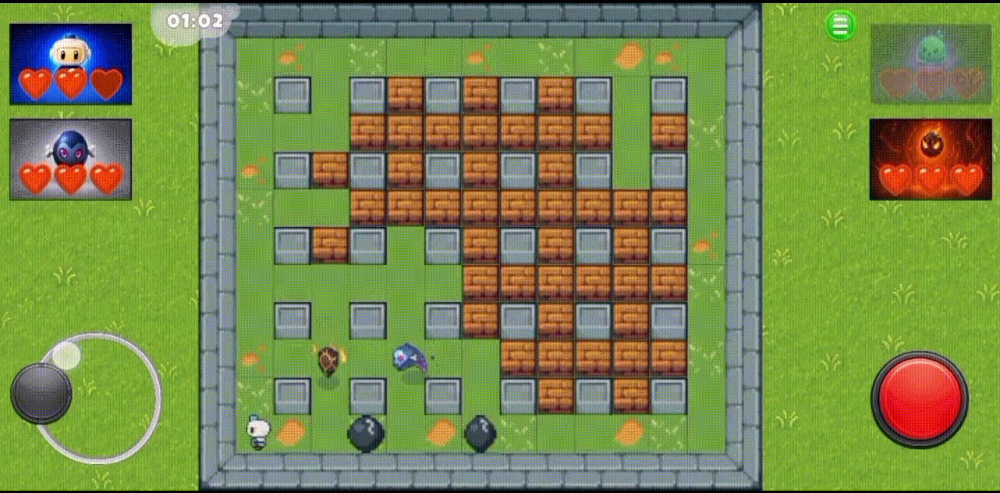

Bomberman Clone (PaoPao)
Progetto mobile multiplayer online sviluppato in team di 3. Contributo personale incentrato su Gameplay Programming, sistema audio FMOD e AI dei bot: strategie intercambiabili che evitano le bombe e perseguono obiettivi diversi.

Feature AI Principali
-
Strategie intercambiabili
Strategy Pattern con una classe base comune (
BotCommonStrategy): una nuova strategia implementa solo cosa fare, il loop di fuga e piazzamento è condiviso. Si cambia strategia da un enum inBotInputHandler. - Evitare le bombe, sempre Ogni mossa è validata: una cella è sicura solo se bombe e fiamme non la colpiscono prima dell'arrivo del bot. La fuga è una BFS verso la cella sicura più vicina; la bomba si piazza solo se esiste una via di fuga.
-
Quattro comportamenti
Random,Explorer(apre la mappa distruggendo i breakable),Kamikaze(insegue il giocatore più vicino) ePacifist(aspetta il 1vs1, poi diventa Kamikaze).
Strategie dei Bot
BotInputHandler
sceglie la strategia dall'enum e la esegue come un normale input
Priorità comune a tutte: restare vivi (evitare bombe e fiamme)
- Obiettivo
- Solo sopravvivere
- Movimento
- Direzione casuale tra le celle sicure
- Bomba
- Appena possibile
- Obiettivo
- Aprire la mappa distruggendo i breakable
- Movimento
- BFS verso la cella più vicina accanto a un breakable
- Bomba
- Quando ha un breakable adiacente
nessun breakable rimastoKamikaze
- Obiettivo
- Sopravvivere finché non resta il 1vs1
- Movimento
- Fermo se la cella è sicura, altrimenti va alla cella sicura più vicina
- Bomba
- Mai, fino al 1vs1
1vs1Kamikaze
- Obiettivo
- Raggiungere il giocatore più vicino
- Movimento
- BFS verso il giocatore; se un breakable blocca il percorso, va a romperlo
- Bomba
- Quando è accanto al giocatore (o al breakable che blocca la strada)
Dettagli Tecnici & Integrazione Input
Pipeline Input: BotInputHandler implementa IPlayerInput, quindi il bot è indistinguibile da un giocatore umano per il controller del personaggio. L'handler crea la strategia scelta (enum BotStrategyType) e a ogni nuova cella chiama IBotStrategy: Think, DecideMove, DecideBomb, più UpdateTimers a ogni frame. Le informazioni condivise stanno in BotContext; le funzioni comuni (BFS, controlli di sicurezza, ricerca di giocatori e breakable) in BotToolkit.
Ciclo decisionale (BotCommonStrategy):
- Stato
Exploring/Escaping: in fuga il bot prosegue verso la cella sicura più vicina (BFS), mantenendo una direzione preferita per non cambiare idea a metà percorso. - In
Exploringla strategia decide se vuole una bomba (WantsBomb). Prima di piazzarla il bot simula il piazzamento e verifica con la BFS che esista una cella sicura raggiungibile; altrimenti rinuncia. - Ogni mossa proposta (
ChooseMove) è controllata: se la cella di destinazione non è sicura, la priorità passa alla ricerca della cella sicura più vicina.
Percezione del pericolo: una cella è pericolosa se una bomba la raggiunge (raggio, bloccato da muri e breakable) o se ci sono fiamme attive, confrontando il timer della miccia con il tempo di arrivo stimato (passi × tempo di attraversamento). Il controllo include anche la bomba che il bot sta per piazzare. Il pericolo è valutato su richiesta per cella, non precalcolato in una mappa. Funziona anche in stanza Photon, leggendo bombe e fiamme online.
Dettagli delle strategie: dopo aver piazzato una bomba, Kamikaze e Pacifist (in 1vs1) fuggono preferendo la direzione opposta al giocatore più vicino. Il bersaglio è scelto per distanza in linea d'aria; il percorso, invece, è calcolato con la BFS sulla griglia.
Mappe: sono presenti 3 mappe, realizzate da un collega del team.
Multiplayer: è possibile giocare online tramite Photon, parte realizzata da un collega del team.
Limiti noti: il bersaglio è il giocatore più vicino in linea d'aria e i bot non si coordinano tra loro; il controllo di sicurezza è ricalcolato a ogni ricerca, quindi con molti bot servirebbe una cache.
Sviluppi previsti: una vera danger map (celle pericolose con timer, calcolata una volta e condivisa tra i bot, al posto del ricalcolo a ogni ricerca) e un Behaviour Tree per comporre le strategie, così che priorità e transizioni tra comportamenti (per esempio Explorer che passa a Kamikaze) siano nodi dell'albero e non codice dentro ogni classe.